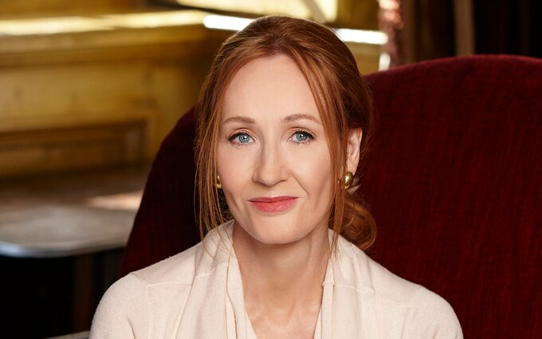

J. K. ROWLING

Harry Potter series
1. Harry Potter and the Philosopher’s Stone (1997)(aka "Sorcerer’s Stone" in the U.S.)
2. Harry Potter and the Chamber of Secrets (1998)
3. Harry Potter and the Prisoner of Azkaban (1999)
4. Harry Potter and the Goblet of Fire (2000)
5. Harry Potter and the Order of the Phoenix (2003)
6. Harry Potter and the Half-Blood Prince (2005)
7. Harry Potter and the Deathly Hallows (2007)
Harry Potter Companion Books / Spin-offs
8. Harry Potter: A Prequel (2008)
9. Fantastic Beasts and Where to Find Them (2001)
10. Quidditch Through the Ages (2001)
11. The Tales of Beedle the Bard (2008)
12. Hogwarts: An Incomplete and Unreliable Guide (2016 – eBook)
13. Short Stories from Hogwarts of Power, Politics and Pesky Poltergeists (2016 – eBook)
14. Short Stories from Hogwarts of Heroism, Hardship and Dangerous Hobbies (2016 – eBook)
Harry Potter-Related Plays and Screenplays
15. Harry Potter and the Cursed Child (2016 – story by J.K. Rowling, Jack Thorne & John Tiffany; script by Jack Thorne)
16. Fantastic Beasts and Where to Find Them: The Original Screenplay (2016)
17. Fantastic Beasts: The Crimes of Grindelwald – The Original Screenplay (2018)
18. Fantastic Beasts: The Secrets of Dumbledore – The Complete Screenplay (2022)
Cormoran Strike Series (as Robert Galbraith)
19. The Cuckoo’s Calling (2013)
20. The Silkworm (2014)
21. Career of Evil (2015)
22. Lethal White (2018)
23. Troubled Blood (2020)
24. The Ink Black Heart (2022)
25. The Running Grave (2023)
26. (Upcoming book 8 – Expected 2025)
Children’s Books (Outside Harry Potter)
27. The Ickabog (2020)
28. The Christmas Pig (2021)
Non-Fiction & Miscellaneous
29. Very Good Lives: The Fringe Benefits of Failure and the Importance of Imagination (2015 – based on her Harvard commencement speech)